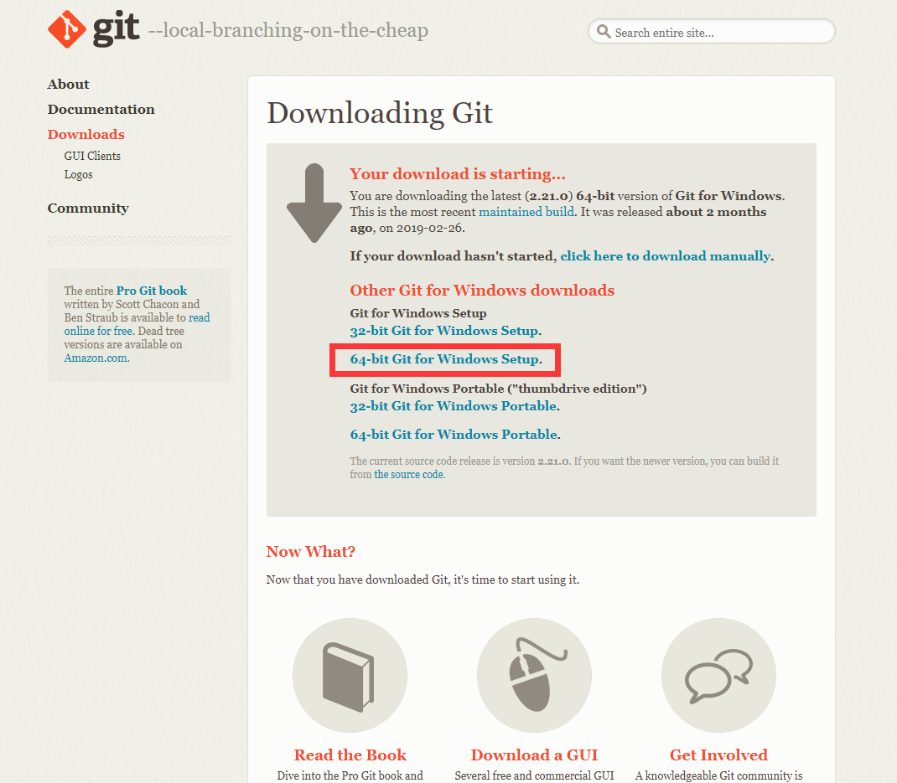
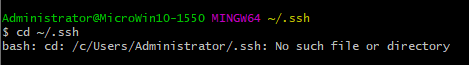
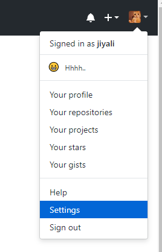
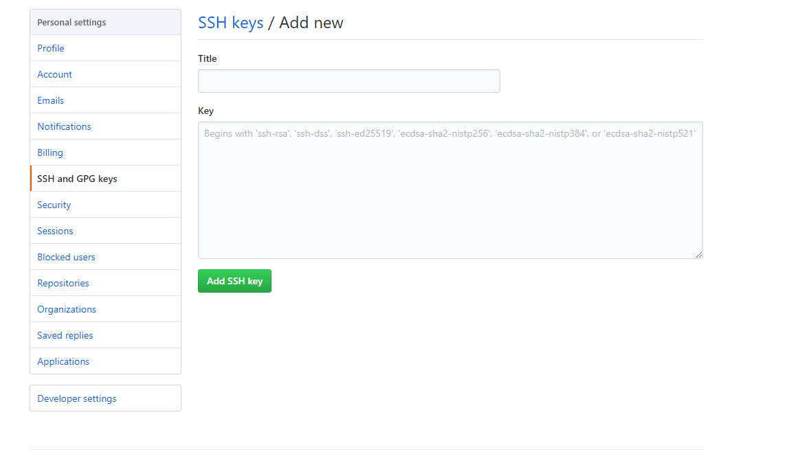
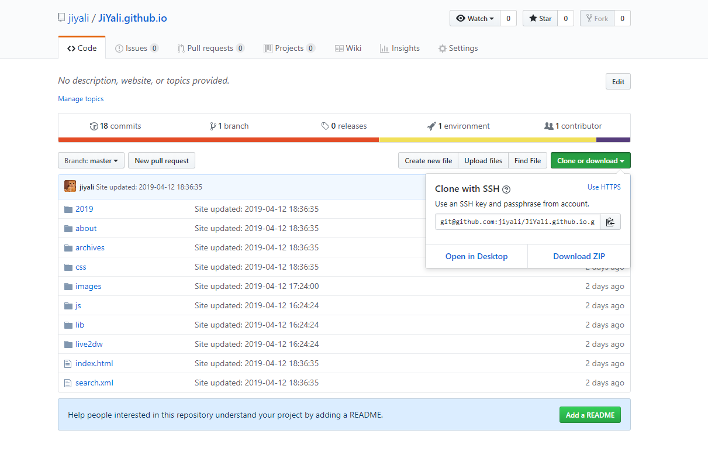

搭建过程
本次搭建Hexo使用的本地环境如下：
- Windows 10
- node v10.15.3 -x64
- git version2.20.1.windows.1
- hexo v3.8.0
- next v6.0.0
准备软件的安装
Node.js
打开Node.js官网(http://nodejs.org)，我们就能看见如下的安装界面：

点击左面的按钮(10.15.3LTS)，下载 node-v10.15.3-x64.msi 安装文件。
下载完成后，打开 node-v10.15.3-x64.msi 进行安装。
除非你要修改安装路径或者有什么特殊的需求，否则一路默认安装即可。
安装完成后，打开cmd，输入 node -v ，若为以下类似的输出，则安装成功。
C:\Users\Administrator>node -v
v10.15.3Git
打开Git官网(https://git-scm.com/downloads)，我们就能看见如下安装界面：

选择适用系统(比如windows)，点击进入后

选择图中红框内的链接，下载 Git-2.21.0-64-bit.exe 安装文件。
下载完成后，打开 Git-2.21.0-64-bit.exe 进行安装。
安装完成后，打开cmd，输入 git --version ，若为以下类似的输出，则安装成功。
C:\Users\Administrator>git --version
git version 2.20.1.windows.1
github
注册
点击github官网(https://github.com/)

这里的 Username 慎重考虑喔！因为个人网站的固定格式就是：username.github.io
创建Repository
登录github之后，点击右上角的 + 号，选择New repository 创建一个与你的博客相关的Repository项目进行管理，之后所有你博客的动态都会在这Repository更新。Repository的名字是username.github.io，比如我的JiYali.github.io已经创建。其余可以先不填，点击Create repository

配置和使用github
开始—所有应用—找到git bash

配置SSH Keys
SSH Keys用来使本地git项目与GitHub联系，这样能在GitHub上的博客项目是最新更新的。
检查SSH Key的设置
首先检查自己电脑上现有的SSH Key:cd ~/.ssh如果显示下图信息，则说明这是你第一次使用git
生成新的SSH Key:
ssh-keygen -t rsa -C "邮件地址@youremail.com" Generating public/private rsa key pair. Enter file in which to save the key (/Users/your_user_directory/.ssh/id_rsa):<回车就好>这里的邮箱地址，输入注册github的邮箱地址
然后系统会要你输入密码Enter passphrase (empty for no passphrase):<设置密码> Enter same passphrase again:<再次输入密码>再回车，这里会提示你输入一个密码，作为你提交项目时使用。
这个密码的作用就是在个人网站里所有的改动只能经过你的手，也可以不设置密码，直接为空。
注意：输入密码的时候没有输入痕迹的，不要以为什么也没有输入。
最后看到类似于这样的界面，就成功设置ssh key了：

添加SSH Key到github上
在本地文件夹找到id_rsa.pub文件。看上面图片中的第四行的位置就告诉你保存在哪里了。默认为C:\Users\Administrator\.ssh。没找到的话勾选一下文 件扩展名和隐藏的项目。

.ssh文件夹里记事本打开这个文件复制全部内容到github相应位置
回到你的GitHub主页，右上角点击头像选中Setting

继续选中左边菜单栏的SSH and GPG keys

Title最好写，随便写。网上有说不写title也有可能后期出现乱七八糟的错误
Key部分就是放刚才复制的内容了，点击Add SSH key
测试
回到git bash 框里
输入以下代码，不要改任何一个字！！！
ssh -T git@github.com
回车，看到如下：
The authenticity of host 'github.com (52.74.223.119)' can't be established.
RSA key fingerprint is SHA256:nThbg6kXUpJWGl7E1IGOCspRomTxdCARLviKw6E5SY8.
Are you sure you want to continue connecting (yes/no)?
```dash
输入yes回车Enter passphrase for key ‘/c/Users/Administrator/.ssh/id_rsa’:
输入刚才设置的密码回车，看到“You’ve successfully authenticated…”
成功！下一步！
#### 输入用户信息
现在已经成功通过SSH链接到github啦，我们需要完善一下个人信息：
```dash
git config --global user.name "username" //输入注册时的username
git config --global user.email "注册的邮箱地址" //填写注册邮箱到此，SSH Key配置结束啦！你的电脑已成功连接到 github。
Hexo
开始菜单中打开git bash，利用npm命令安装hexo
npm install -g hexo请耐心稍等一会儿，如果在安装过程中头部出现 WARN ，可能是因为某些内容不支持 Windows，请不要担心，并不影响实际使用。
(在我写教程的时候安装hexo死活就是出错，尝试了npm config set registry https://registry.npm.taobao.org
再输入npm install -g hexo后才安装正常，可以做个小参考，如果没用，请自行百度解决~)
在安装完成后，输入hexo -v，若出现类似以下内容，则 Hexo 已经安装成功。
hexo-cli: 1.1.0
os: Windows_NT 10.0.17763 win32 x64
http_parser: 2.8.0
node: 10.15.3
v8: 6.8.275.32-node.51
uv: 1.23.2
zlib: 1.2.11
ares: 1.15.0
modules: 64
nghttp2: 1.34.0
napi: 3
openssl: 1.1.0j
icu: 62.1
unicode: 11.0
cldr: 33.1
tz: 2018e搭建hexo博客
创建博客主目录
在本地创建一个与 Repository中博客项目同名的文件夹username.github.io(如D:/JiYali.github.io)
初始化hexo主目录
在文件夹上点击鼠标右键，选择 Git bash here，输入如下命令hexo init
- 安装依赖包
npm install
确保git部署
npm install hexo-deployer-git --save本地查看
hexo g
hexo s打开浏览器，在地址输入http://localhost:4000 ，我们就可以看到激动人心的界面啦！

至此hexo博客就真的已经简！单！的！搭！建！完！成！了！✿✿ヽ(°▽°)ノ✿
使用next主题
我想说next这个主题真的是超简单方面，之前尝试了几个主题配置方面都是贼麻烦，所以最终还是随大流选择了next，emmmm..完全是发现了新！大！陆！(✪ω✪)
克隆主题
在博客主目录文件上点击鼠标右键，选择 Git bash here，输入如下命令：
git clone https://github.com/theme-next/hexo-theme-next themes/next启用next主题
我们在博客主目录文件夹下可以看到有一个名为 _config.yml 的配置文件，我们用编辑器打开它，搜索 theme，我们可以找到以下内容：
# Extensions
## Plugins: https://hexo.io/plugins/
## Themes: https://hexo.io/themes/
theme: landscape我们要将其中的 landscape 修改为我们要是用的 next，修改完如下所示：
# Extensions
## Plugins: https://hexo.io/plugins/
## Themes: https://hexo.io/themes/
theme: next查看已启用的主题
我们在 Git Bash 依次输入下方三条命令：
hexo clean
hexo g
hexo s就可以看到如下界面啦
将博客部署到uesrname.github.io
复制SSH码
进入 Github 个人主页中的 Repository，复制新建的独立博客项目username.github.io的 SSH码

编辑整站配置文件
打开博客主目录文件夹下的 _config.yml ，用编辑器打开它，搜索 deploy，把刚刚复制的 SSH码粘贴到repository：后面，别忘了冒号后要空一格。
deploy:
type: git
repository: git@github.com:jiyali/JiYali.github.io.git
branch: master执行下列指令即可完成部署
Git Bash 依次输入下方命令：
hexo clean
hexo g
hexo s
hexo d【提示】如果在配置 SSH key 时设置了密码，执行 hexo d 命令上传文件时需要输入密码进行确认
输入密码之后在浏览器输入：username.github.io
Surprise🎉！恭喜你~
现在你已经拥有自己的一个小空间啦~
参考链接:
如何搭建自己的个人网站（上）
基于Hexo+Coding+Github搭建个人博客的全过程
我的文章将持续更新在我的 https://jiyali.github.io/ 里
任何疑问请在下方留言，也将在下一期教如何制作留言板和写博客等内容~
敬请期待~❤